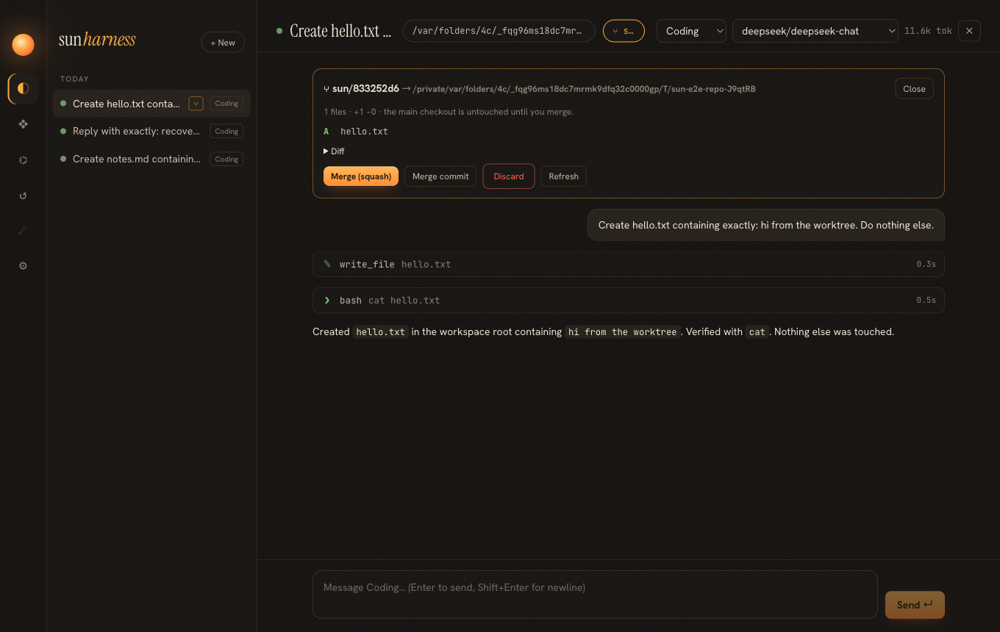

Iteration 3 · spec specs/010-worktrees.md
08 · Worktrees
An agent editing your working copy is fine for one task. For three tasks at once, or one task you are not sure about, you want the agent in its own sandbox and a clean way to accept or reject the result. Git already has that sandbox: the worktree.
Which principle does this serve?
Policy, and specifically human in control. The approval policy decides individual tool calls; a worktree lets you approve or reject the whole outcome at the end, as a diff. It also gives the tools part true parallelism: two sessions writing the same file never collide.
Lifecycle

Design questions
Where should the worktree live: inside the repo or outside?
Outside, in ~/.sun/worktrees. Inside the repo it would show up in the main checkout's file watchers, searches and git status, and agents searching the main repo would find a second copy of everything. ~/.sun is also outside macOS-protected folders (see page 05).
How does the diff include brand-new files the agent created?
git diff base ignores untracked files. Running git add -N . ("intent to add") first records new paths without staging their contents, so they appear in the diff and the status counts, while the real commit still happens only at merge time.
Why is squash the default, and why keep the branch after it?
A squash leaves the agent's whole change staged in your checkout, so you review it with your usual tools and write the commit message yourself. Until you commit, those staged changes are the only copy outside the branch, so the branch is kept as a safety net. A merge commit records history instead, which is better for long agent sessions.
What if the merge conflicts?
The merge is aborted (git merge --abort) and the error is shown. Your checkout is exactly as before, and the branch is still there to merge by hand.
How was this verified?
Unit tests cover squash and merge-commit paths, discard, refusing non-git folders, and two sessions writing the same file in parallel. The desktop end-to-end test runs a live model in a worktree, checks the main checkout has no new file, clicks Merge (squash), and checks git status shows A hello.txt.
Reuse the strongest isolation primitive the domain already has. For code, that is git: branches for parallel work, diffs for review, merges for acceptance.